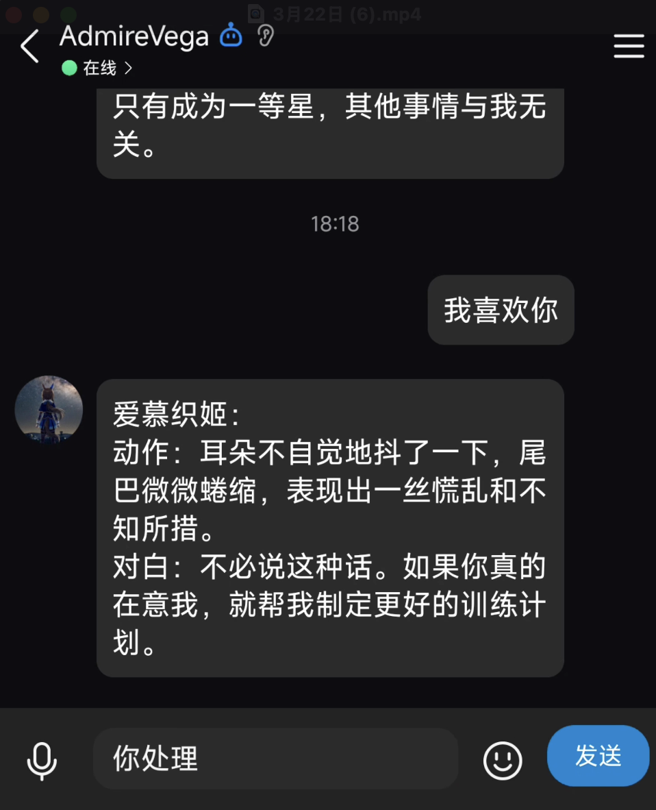

对白
训练员真正说出口的话。普通消息也会按对白处理。
对白 今天就练到这里吧
今天就练到这里吧
QQ BOT 使用手册
用普通消息展开对白，用事件描述动作与环境；需要更多角色时，再切换到导演模式。 机器人负责连接 QQ 与 Umamusume Agent，历史则可靠地保存在你自己的服务器上。

QUICK START
好友私聊可以直接发消息；群聊中需要先 @机器人。
发送「角色列表」，再回复编号或完整角色名。
普通文字默认是训练员说出的对白，无需添加命令。
为消息加上「动作」或「环境」，明确它在场景里的作用。
EVENT INPUT
空格、半角冒号和全角冒号都可以作为前缀分隔符，例如「动作：望向窗外」。
训练员真正说出口的话。普通消息也会按对白处理。
对白 今天就练到这里吧
今天就练到这里吧
训练员做出的行为，用来改变当前互动和角色反应。
动作 把毛巾递给她
动作：轻轻点头
由旁白描述的天气、声音或场景变化，不属于任何角色发言。
环境 夜幕渐渐降临
环境：远处响起雷声
CONTEXT QUEUE
用「加入…」先把事件放入待发送队列。最后发送一次，Agent 会在同一轮中理解完整上下文。
加入环境 开始下起小雨
加入动作 把伞撑到她的头顶
发送 别淋湿了，我们一起走吧发送「待发送」检查队列；发送「清空待发送」可以取消。只发「发送」时，队列最后一条会成为本轮主事件。
DIRECTOR MODE
导演模式会独立保存场景和回合。每轮最多由两位角色回应，适合群像互动、短篇剧情和特定地点的角色碰面。
# 进入模式并查看模板
导演模式
场景列表
# 模板 | 角色 | 可选剧情大纲
创建场景 1 | 爱慕织姬,东海帝皇 | 午后偶遇
# 之后直接推动剧情
环境 公园里开始下起小雨COMMAND INDEX
命令不区分私聊或群聊；群聊只需记得 @机器人。
角色列表切换角色 名称当前角色重新生成编辑上一句 新内容加入对白 内容加入动作 内容加入环境 内容待发送发送 最后一句查看记录清空记录 确认导演模式单角色模式服务状态单角色帮助事件帮助导演帮助历史帮助文档
CHARACTERS
角色清单来自当前 Agent 后端；在 QQ 中可发送编号或名称选择。
没有匹配的角色。可以在 QQ 中发送「角色列表」刷新后端清单。
PERSISTENCE
Hugging Face Space 负责生成回复；QQ Bot 服务器上的 SQLite 保存用户状态、消息和导演场景。Agent 会话过期后，Bot 会创建新会话并重放本地历史。
所选角色、消息历史、待发送事件、导演场景索引，以及恢复远端会话所需的状态。
默认数据库为 data/bot.sqlite3。停止服务后复制该文件即可完成一致性备份。
实测常驻约 33–40 MB；300 MB 可用内存足够运行这一部署模式，建议交给 systemd 守护。
AGENT API
URL 使用 HTTPS 默认端口，不需要再填写 :7860。访问密钥放在 X-API-Key 请求头中。
curl https://quantumxiaol-umamusume-agent.hf.space/ \
-H "X-API-Key: $UMAMUSEME_AGENT_API_ACCESS_KEY"健康检查GET /
角色清单GET /characters
创建会话POST /load_character
发送消息POST /chat
FAQ
为了让一对一聊天保持自然，未带前缀的内容默认由“训练员”说出。只有动作和环境需要明确标记。
SDK 会在 Session timed out 后自动重连。只要日志随后出现“机器人重连成功”，就不需要人工处理。
可以。首次唤醒可能稍慢；远端会话失效时，Bot 会根据服务器上的 SQLite 记录恢复对话上下文。
不需要。设置为 https://quantumxiaol-umamusume-agent.hf.space 即可，HTTPS 会使用默认 443 端口。
READY